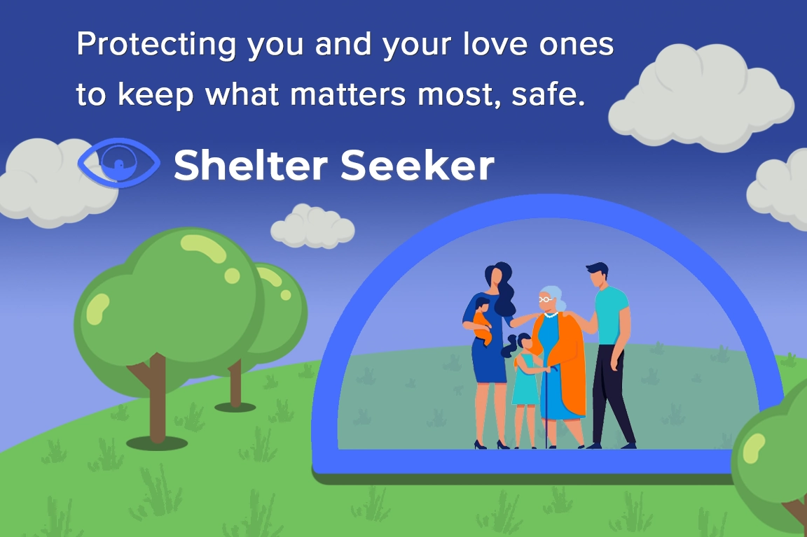
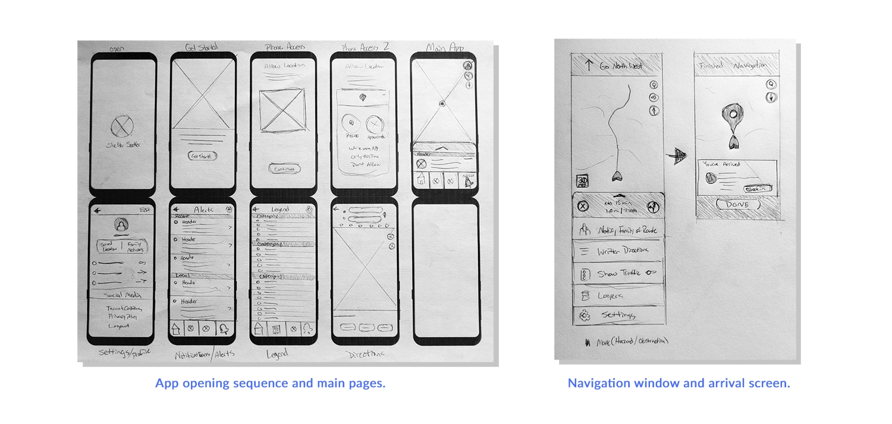

My Role:
- Visual & Interactive Design
- User Research & Competitive Audits
- Wireframing & Prototyping
Client:
- None - Google UX Design Certification
Project Duration:
- April 2023 - June 2023
Link to FIGMA Prototype:
About:
Shelter Seeker, the culmination of my Google UX Design Certification journey, focuses on creating a disaster alert and shelter navigation platform. Its primary goal is to ensure user safety by monitoring local natural disasters, issuing alerts, and providing swift navigation to nearby shelters. The design process prioritizes mobile usability, extending the design to the web and other platforms. Early on, a crucial realization emerged: each platform serves distinct goals. The mobile app excels in disaster alerts and navigation, while the website accommodates additional disaster preparedness resources and insurance information. This divergence guided my design decisions throughout the project.
Challenges:
The Shelter Seeker project presented a challenge in blending navigation functionality with the complexity of natural disasters and weather data. While still acknowledging the conceptual nature of Google UX projects, I still aimed to carefully design what could be a functional app.
Extensive research into weather apps, navigation tools, and crime alert applications was crucial in understanding the project's scope. To simplify complexity, I gave myself the leeway of having Shelter Seeker work in collaboration with Google Maps systems to streamline navigation. This choice enabled me to concentrate on crafting a user interface and defining features and systems without getting bogged down by the difficulty of obtaining navigation and weather data.
Step 0. Establishing the Goal
Scroll down to view Shelter Seekers workflow process.
The Google UX certification course employed a project prompt generator, assigning random design projects. What I enjoyed most about being assigned a random problem was the removal of preconceived ideas about solutions. When tasked with a disaster/shelter navigation app, I dove in to understand potential user problems, conducted research, and practiced empathy to address concerns. This approach helped me think of solutions and establish a focused goal for the project.
The Users' Problems:
- Lack of timely alerts notifying users of potential disasters in their area.
- Difficulty finding nearby shelters in emergency situations.
- Limited access to comprehensive disaster information.
By identifying these three key problems that users were facing, I set out to create a goal for my upcoming design solutions, aiming to better serve their needs.
The Project's Goal:
Design an app and website that allows users to track potential disasters near them, navigate to safety, and provide relevant information about resources near them.
After defining the goal and gaining clarity on what I was designing, I dove into the research phase to tackle that goal. The Google UX course stressed the value of empathy and in-depth user research, underscoring the importance of prioritizing users' needs and requirements over personal assumptions.

Step 1. User Research
Scroll down to continue with research phase.
Background:
In the research phase, Shelter Seeker differed from my previous Google UX projects, focusing on a disaster navigation app—a concept I wasn't familiar with. Unable to find similar apps, my competitive audit centered on Clime, a NOAA Weather app, a Disaster Alert app, the FEMA website, and the Pacific Disaster Center website. This provided insights into terminology and key elements. For the navigation aspect, inspiration was drawn from Google Maps, Waze, and MapQuest.
As Shelter Seeker lacked an existing user base, I instead crafted fictional personas to refine concepts, aligning features with the persona's expectations. To determine the personas, I focused on demographics representing Shelter Seeker's target audience—specifically, families and business owners in the North American market who value real-time weather updates for home and business safety.
I created two personas—an attentive mother and a business owner—to embody this target audience. These personas, with distinct profiles, formed a foundation for effectively testing my design solutions by anticipating their needs. However, before diving in, I wanted to consider the potential pain points these personas might encounter.ain points these personas might encounter.

User Research: Pain Points
The next step was interviewing and empathizing with potential users to uncover their pain points. The goal was to better understand the challenges they might face. Operating without a budget, I drew from personal experiences and gathered input from family and friends. Additionally, I explored analogous applications in weather and navigation, envisioning potential user frustrations. Building on these observations, I extracted the following insights
- Limited Information - Users often face challenges due to limited details about disaster shelters, such as their availability and specific disaster coverage. This limitation forces users to navigate multiple sources to obtain crucial information, a task made more difficult by power outages and other potential issues during a disaster event. Shelter Seeker would address this by keeping all relevant information centralized and updating it accordingly.
- Network - Reliability of networks and electricity during disasters poses a challenge. With the potential for internet and regular services disruption, the navigation app should have the capability to download map data and operate without or with minimal connectivity. This consideration also underscores the importance of designing a dark-themed app with battery-saving features to ensure usability even when electricity is limited.
- User Interface - Weather apps contain an overwhelming amount of available information, making it difficult to quickly grasp relevant details. Different types of natural disasters have varying properties that affect severity, and understanding the danger at a glance can be challenging. To address this, I envisioned implementing a color-scale alert system in my application. This system aims to help users quickly assess whether they should be concerned about a particular weather event, with the scale corresponding to specific expected damage levels.
- Inaccurate - Inaccuracies in weather information and shelter details present a critical challenge. Ensuring that Shelter Seeker delivers reliable and timely alerts while maintaining accurate shelter data, requires a seamless integration with weather and shelter services. If Shelter Seeker were to move from the conceptual stage it would need an impressive communication framework to guarantee the app's effectiveness and maintain user trust.
With potential pain points identified, I could now create more realistic personas and consider the problems they might encounter while interacting with the application.
Personas and Journey Maps
Maria and John emerged as two key personas representing Shelter Seeker's diverse user base. Maria, a mother and teacher, expressed concerns about the safety of both her classroom and her own children. On the other hand, John, a business owner, prioritized disaster preparation and sought insurance information relevant to his business. Subsequently, I initiated the process of mapping their hypothetical journey through my application, reflecting on the pain points I had established. This journey mapping aimed to uncover insights and develop solutions to address the problems that my app could alleviate for Maria and John along their user journeys.
Maria's User Journey - Maria's perspective prompted considerations for user-friendly features, such as quick buttons for simple tasks. The concept of a family account, allowing users to track family members' phones and send navigation data during emergencies, was inspired by Maria's needs. Additionally, Maria's insights highlighted the importance of providing detailed information about shelters, including capacity and suitability for families.
John's User Journey - John's perspective brought attention to potential revenue streams for the application, particularly by connecting with insurance companies and offering disaster claims information. Although beyond the project's scope, these insights underscored the financial viability of the application. Furthermore, John's persona influenced the idea of creating custom preparation plans for businesses, facilitating distribution to employees and staff.
Armed with these personas and the insights derived from their concerns, I began the design process.
Step 2. Starting the Design
Scroll down to view the design process.
Paper Wireframes
When designing the Shelter Seeker app, my initial focus was on crafting a user-friendly signup and login process for new users, driven by the needs of both personas, Maria and John. The early sketches for the login process emphasized minimal design elements and simple step-by-step instructions. Recognizing that the main home screen would feature a map with a comprehensive HUD system containing various information, I aimed for a gradual introduction to the application's features.
The home screen design featured a large map section with icons on the right side, a scrollable menu labeled the slide menu at the bottom, housing additional details, and a navigation menu at the very bottom. Additional screens, such as Settings, Alerts, Map Legend, and the main Map Directions screen, were also sketched out. To ensure accuracy, I detailed the Navigation window and the slide menu for that screen, along with the screen upon the user's arrival at their destination.
With the initial outline for the mobile app sketched on paper, I transitioned to Figma to start working on digital wireframes.
Digital Wireframes - Mockup One
This initial digital mockup features the home screen, consisting of a map displayed in hazard mode. The hazards mode displays a weather radar with potential hazards nearby and is the focal point for users upon logging in. From here, users can access standard Google Map features, with a focus on seeing hazards near their location. Navigation is possible on the map by clicking the "Directions" icon on the map, clicking on individual disasters, or using the slide menu to find/search for hazards. At the bottom of the app, the "Navigation Menu" bar contains other major functions of the app, such as "Shelter," which switches the map to focus on disaster shelters near you rather than hazards, the map legend, disaster alerts, and other features.
The slide menu is essential as it streamlines the information displayed on the map by presenting a visible list on the same screen. It provides text versions of the closest hazards and additional relevant information. The menu updates its display depending on the map mode the user is in and whether or not you've clicked on a particular hazard or shelter. This additional hazard or shelter information can include links to other functions in the app, such as directing users to shelters, websites, resources, etc.
Digital Wireframes - Mockup Two
Here is the first version of the directions to shelter function of the app that as I stated in my original outline would use map data from Google. I tried to keep the layout consistent with Google Maps style of navigation to not confuse users who may have both products on their phones. The changes that I made were keeping the darker colors consistent with the Shelter Seeker's desire to save on battery power and the functions of the slide menu which would have some custom functions related to tracking and sending Shelters to members of the user's family. I also wanted the "Arrive At" screen to have a feature for directly checking in or navigating to the website of the shelter if available.
With wireframes done for most of the main pages of the app, I then began the process of using Figma to connect all of the pages to create a functional prototype.
Figma Link: Shelter Seeker Lo-Fi Prototype
Users start at the 'Get Started' screen, simulating a fresh login. For those reinstalling or with existing accounts, an alternative sign-in option is available. Once on the hazard map home screen, users enter the main app. Here, they can view nearby thunderstorms, access additional hazard information through the slide menu, or navigate to other pages using the nav menu. Navigating to a shelter is initiated by clicking the arrow on the map or selecting a shelter from the shelter slide menu.
Even after my experience in using Figma from previous projects, I faced challenges during the creation of the slide menu. Building tiers of navigable scrolling frames and linking them to behave as expected required some time to understand, as illustrated briefly below.
Designing the Slide Menu
Recreating the slide menu in Figma posed two challenges. Firstly, achieving the sliding behavior required embedding the menu component within frames, creating a nested structure. This setup enabled the menu to slide vertically and transition between different states to simulate the menu's main functions. While functional, a problem was that buttons on the layer below the sliding menu remained clickable, even when the menu obstructed them. If time allowed, exploring alternative solutions to this issue would be valuable.
The second challenge was more user experience-oriented. The slide menu proved harder for older users to grasp. In the lo-fi prototype, limited to black-and-white design, my options were limited to drawing attention to the top of the slide menu. An early adjustment included adding a small bend to the line at the top of the slide menu, mimicking an arrow, subtly indicating its movable nature. Ensuring the menu was slightly open when navigating to a page helped users understand its upward and downward movement to reveal more information. In the subsequent design stage with color incorporation, Shelter Seeker's main pop color played a crucial role in signaling the slide menu's interactivity.
With the prototype built, I could begin a usability study with real users. Observations and notes from this study looked to identify areas for improvement, enhance positive user experiences, and ensure successful completion of app activities.
Usability Study: Findings
The Google UX Course highlighted the importance of usability testing, both from ideal scenarios and real-world constraints such as limited budgets and time. Applying practical insights from the course, I conducted remote usability testing using scripts and questions to guide participants through tasks. This approach recorded user interactions, comments, and feedback, informing my future design iterations.
While working on Shelter Seeker's design, I conducted two rounds of usability testing, focusing on two tasks: firstly, finding a disaster near the user and obtaining more information about it, and secondly, using the app to locate and navigate to a safety shelter.
In the lo-fi version, the primary challenge was the slider menu, which wasn't intuitive for users. Figma's limitations in map interaction added to the confusion, but users adapted when informed that the map was a static image. They also noted text formatting and spacing issues, which were addressed by implementing a font scaling system and adjusting text within the slider menu's rows. With the changes between versions, the hi-fi version went better, and most comments were about potential updates, additional features, or items that could be included for later updates in the project. I would also like to explore accessibility concerns by allowing the menu's rows to scale in several larger sizes to accommodate increased font size. This would have been particularly useful, especially for older users.
Let's transition to the next section, where I incorporate Hi-Fi elements and integrate insights gathered from my usability study.
Step 3. Refining the Design
Scroll down to view the refinement of the design.
Creating a Style Sheet
One of the processes I learned while working with Figma was the easy creation of style and sticker sheets when designing for a project. This was a great way to keep track of the various fonts, sizes, and colors used, not only if you're a designer working alone but, more importantly, when you're working with developers so that everyone is on the same page for what the project looks like.
For Shelter Seeker, I opted for sans-serif fonts that would be easy to read on mobile since I had a lot of information to stack near each other while remaining visible. The primary font for the app is DM Sans, chosen for its modern, geometric shapes that work well at smaller font sizes. Paired with DM Sans is another sans-serif font, Montserrat, which is more unique and functions well as both logo and header text. Unlike previous projects where I used a 1.62 scaling, I decided to go with a 1.250 major third scaling for this project, ranging from 12.8 pt to 48.83 pt. This choice felt more suitable for the smaller text sizes needed for the project and aligned well with my mobile-first approach.
I felt I stumbled upon a theme for Shelter Seeker fairly quickly compared to other projects. From the beginning, I aimed for a darker-themed app because I had read about OLED phones using less power for darker pixels. While not all phones work this way, I thought anything that could potentially help users save battery in a disaster situation was something the app should consider. With black as the main background color throughout the app, I chose a saturated neon blue to visually pop while also aiming to be a protective and soothing color. The other main colors were yellow for accented text on black screens or red for alerts. The advantage of the app mainly being black, white, and blue allowed color to play a more critical role in the map portion of the app. Disaster alerts were color-coded from green to red or purple, serving to quickly indicate the strength of the disaster.
With the established theme and created hi-fidelity elements, let's showcase some designs following the second round of usability testing.

Adding the Styles
Nothing in my 'Get Started' page needed to change after my usability testing; however, this opening screen was the first page I applied my styles to and it showcases the difference a quick image and color swap can make for a project. The lo-fi version of this page wasn't visually interesting, but with a stock photo and the colors and fonts swapped, suddenly the very first page of my prototype looked like a professional app. After this, I knew I was on the right track.
Improved User Experience
Between versions, usability testing revealed issues concerning the slide menu's functionality and behavior, along with problems with the text spacing within each row. With the changes shown above, user confusion about interactive elements diminished notably with the introduction of a vibrant color scheme. The bright blue color for the slide menu and direction buttons enhanced clarity, making interactive elements more apparent. Moreover, incorporating color into the disaster icons contributed to better user navigation and interaction success. Fonts were updated and repositioned with a reduced margin next to the weather icons to optimize spacing.
Navigation Experience
These are the four main steps to navigate to a disaster shelter near you. Starting from the map screen, users can click on the blue arrow to open the directions tab. From there, they can search for or click on a nearby shelter, bringing up an information window about the shelter. Within this window, users can click to initiate navigation, similar to using Google Maps. There are several other ways to access a shelter's page for navigation, including clicking on a shelter on the map or in the slide menu. I considered it essential for users to review the individual shelter's information before starting navigation, ensuring that the shelter is open and available, distinguishing it from typical Google Maps functionality where users might navigate directly without such considerations.
Figma Link: Shelter Seeker Hi-Fi Prototype
This marks the final version of the Shelter Seeker app prototype, as laid out in Figma. Similar to the lo-fi version, the user commences the journey from the 'Get Started' screen, assuming a fresh app installation. The user can navigate through the account creation process or swiftly sign in with an existing account. On the main map screen, the bottom navigation menu empowers the user to explore the app's core functionality, with the primary objective being to click on a disaster for information or successfully navigate to a shelter.
The image above uses color-coded navigation arrows to emphasize page relationships: yellow denotes the main process, green signifies overlays, and purple represents additional tabs like alerts or the map legend – not imperative but designed for completeness within the main menu bar.
Given that the primary goal of the project centered around the mobile app, most of my focus was directed there. Nevertheless, as part of the Google UX Course requirements, we were encouraged to create mockups for the project in two additional sizes. Personally intrigued by exploring the distinctions between the mobile app and a website, I invested additional time in planning the site map and designing the Shelter Seeker website.
Step 4. Scaling the Design
Scroll down to view scaling from mobile to desktop.
Site Map
Adapting Shelter Seeker to a desktop resolution involved more than just scaling elements. As a navigation app primarily designed for mobile use, the website needed to serve a distinct purpose considering that most people in the US rely on phones for navigation. To organize my thoughts, I created a site map, outlining pages intended to differentiate Shelter Seeker from the mobile experience. The color-coded site map highlighted public pages in red, account-based features in blue, and a hybrid page in purple, illustrating their connections and organization into five main categories.
Home: This serves as the introduction to Shelter Seeker, providing essential information about the application, showcasing features, and featuring the main call to action for potential users to download the application.
Login/Account: This page facilitates the creation of a new account, connecting information between the mobile app and the website.
Explore: Mirroring the main functionalities of the mobile app, this page offers features such as disaster tracking and navigation to shelters. With enabled cookies and location tracking, users can view potential disasters in their vicinity, providing the same features as the mobile app on the website.
About Us: Functioning as an informative section, this page offers details about Shelter Seeker's mission, values, and contact information. It includes a call-to-action encouraging users to explore and potentially download the application.
Resources: This page serves as a significant feature, offering disaster-related reports, publications, preparation advice, and risk assessment information. It can also provide a revenue stream by linking users to insurance companies for home and business coverage.
News: This page provides real-time information from local news sources about natural disaster-related events. It utilizes the mobile app's alert system to contain an alert bar to highlight ongoing disasters worldwide, keeping users informed of current situations.
Mobile Home Screen to Explore Page
The provided image showcases a rapid mockup of the "Explore" page on the Shelter Seeker website. The goal was to illustrate the adaptation of the main map home screen from the mobile app to a larger website resolution. The increased resolution enables the display of additional features, such as filters, which are positioned on the side of the map rather than the bottom. This layout allows the bottom section to exclusively present information about the selected map item when the user clicks or searches for it.
Website Page Design
The image above outlines the fundamental themes and layouts for the main pages of the Shelter Seeker website. The objective was to adapt fonts and colors for a larger resolution while maintaining a consistent theme between the mobile and web versions. Recognizing the distinct goals of each version, the website design incorporates more text and imagery, adhering to a more traditional layout compared to the app's map and slide menu.
Desktop to Tablet
The image above illustrates the adaptation of the Shelter Seeker homepage from desktop to tablet resolution, specifically designed for an iPad 11. The adjustments include removing the black sidebars on the main table and rearranging the margins between elements to ensure the content fits the page without altering font sizes or losing essential elements.
Figma Link: Shelter Seeker Website Mockup / Prototype
Above is a link to the prototype mockup of the website version of Shelter Seeker. Compared to the phone version of the project, this isn’t as interactive and only allows users to check out the webpage layouts and designs rather than interact with the project. If you're interested in my ability to prototype websites in Figma check out my second portfolio project Blossom and Bloom . Since that project was fully desktop-oriented I spent a lot of time fleshing out that potential website.
Impact and What I Learned
The Shelter Seeker Project highlighted the inherent challenges of being a solo designer entrusted with a substantial project. The concept assigned from a random generator thrust me into the realm of application design, introducing new considerations. In a real-world scenario with a client, collaboration with professionals in weather-related fields, geology, emergency services, and technology experts would be essential to fully comprehend the project's scope and design requirements.
Conducting comprehensive research on existing weather and navigation apps played a crucial role in my process. I delved into understanding the data required for users, shaping the application's structure, and identifying potential sources of revenue beyond mere functionality. Despite the research, uncertainties persisted, such as in simple ideas like incorporating a check-in process for disaster shelters. The feasibility of such features in FEMA shelters remained uncertain.
While Shelter Seeker features a visually appealing and functional design, the project underscored the importance of scoping. It emphasized the need to focus on incremental changes, testing each modification's impact on the user experience. This experience provided a greater appreciation for the collaborative nature of real-world design challenges, highlighting the necessity for cooperation with various experts to solve complex issues.
Thanks! You've made it through my entire design process,
Click the arrow button on the right to return to the top of the page, click Portfolio to see my selected works, or click Archives and look through other projects.